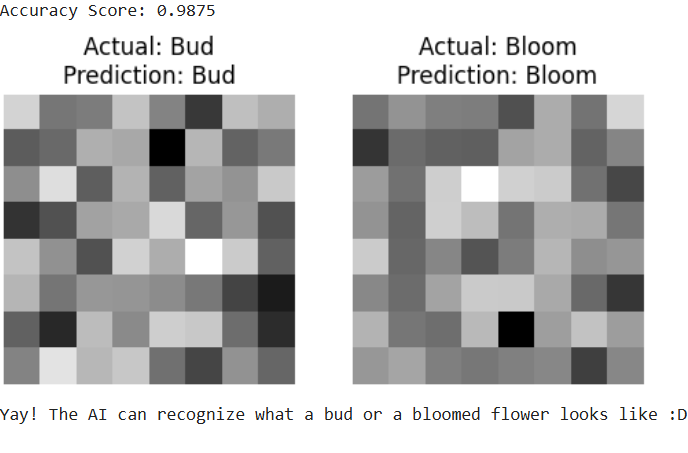
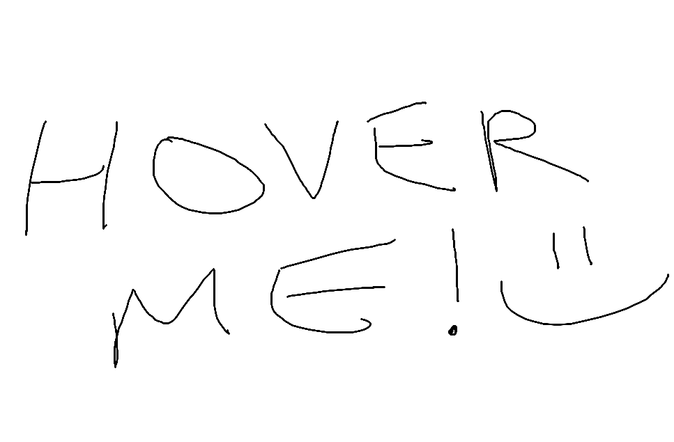

Thomas "Han Xi" Guo
CS/BBA at the University of Waterloo
Welcome to my page!
Based in Toronto, Ontario, Canada
Incoming @ Department of National Defence, exploring voice-activated systems, fine-tuning, and RLHF
New info will be added to this site regularly. I am in the process of migrating my old site materials to this layout
Favourite Ideas, Opinions, Things
Reddit threads that solve any burning problem are probably the most timeless inventions
We can always be a little more kind
Thai Tea (make your own instead of buying a cup)
"Both things can be true"
The Shopping Cart Theory can easily apply to different items and it's interesting to think of the possibilities
Pokémon Plushies
Projects

